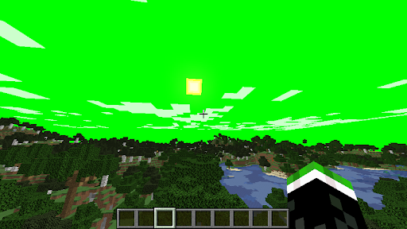
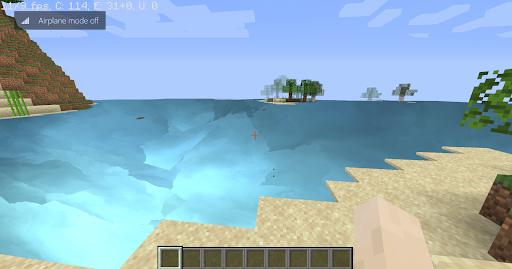

Terrance Wang, Lara Chu, Brandon Choy, Roland Li
Link to Slides Link to VideoWe want to create a mod for Minecraft to allow realistic sky rendering and water animations by building out a path tracer and implementing realistic clouds, improved sky gradients, water reflections, and more.
We have our local working environments set up with up-to-date versions of Minecraft and Optifine downloaded and working. We have decided to split into two different teams one working on creating realistic sky renderings and the other creating realistic water renderings for our shader. We have looked into atmospheric scattering implementations, Rayleigh scattering and Mie scattering equations, in-scattering and out-scattering. We’ve also researched and developed smaller scale shadertoy implementations of atmospheric scattering. For water animation, we have a working implementation of random noise generation and fractional Brownian motion. We can currently render the water as an interpolation of 3 colors with these two techniques applied. We have also done some research into normal and parallax mapping to add more definition to our water. Additionally, we’ve looked into various resources to learn more about the GLSL/OpenGL pipeline and how to implement a basic color manipulation Minecraft shader. We’ve also set up a loose skeleton code and file structure.
Preliminary Results We have started shadertoy implementations before porting it to Minecraft. Below we have our beginnings of manipulating the sky shading and water animation.
 We have our plan reproduced below for your convenience.
April 13 : Setup Minecraft and download necessary resources.
April 13 - 16: Look into existing shader packs, conduct algorithm research and research how to render realistic water with a path tracer.
April 16 - 27: Implement a good path tracer and compare performance to existing path tracer mods.
April 27 - May 4: Implement water rendering: add texture, refraction, and reflection to the water.
May 4 - May 11: Implement sky rendering: retexture clouds and add natural lighting
We have completed the local setup of Minecraft and Optifine. We have a working understanding of the GLSL rendering pipeline and have done research on random noise generation and Brownian motion for water and scattering algorithms and ray marching for skies. Since Minecraft is a rasterized game, we are no longer working on implementing path tracing.
April 28th - 29th: Finish shader toy implementations
April 30th - May 4th: Begin porting code and configuring for Minecraft
May 5th: Create final presentation slides and do a practice run
ay 6th: Final Presentation
May 7th - 10th: Write final report webpage and record project video
May 11th: done!
Water - wavy, reflective water
Sky - atmospheric scattering
Water - foam, bubbles, refraction, view from inside water, cartoon water
Sky - realistic clouds
Other - animal